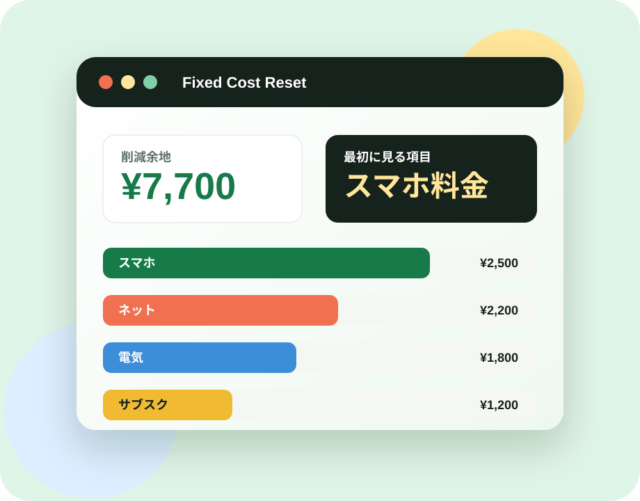

比較が多すぎる
スマホ、電気、ネットの比較ページを開くほど、条件が増えて判断できなくなる。
一人暮らし・新生活の固定費ミニ診断
スマホ、電気、ネット、サブスク。毎月の支払いが増えているのに、どこから見直せばいいか分からない人のための、3分固定費チェックです。

Start With Pain
スマホ、電気、ネットの比較ページを開くほど、条件が増えて判断できなくなる。
毎月払っているのに、手続きが面倒で「来月やろう」のまま固定費が残る。
何を変えたらいくら浮くのか分からず、行動する前に疲れてしまう。
MVP Diagnosis
当てはまる項目を選ぶと、見直し候補と目安の削減余地を表示します。最初から完璧に比較せず、反応が出る導線だけを残したMVPです。
Categories
Market Proof
最初から記事を大量に作らず、どの不便に反応があるかをボタン行動で見ます。クリックが多い項目から、比較記事、提携リンク、メール講座へ広げます。
トップから診断まで進むか。
スマホ、電気、ネット、サブスクのどれに反応するか。
結果を受け取るためにメール登録するか。